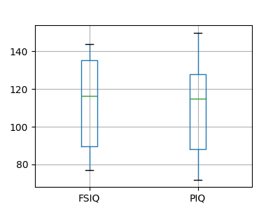
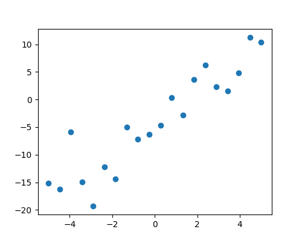

3.1. Statistics in Python¶
Author: Gaël Varoquaux
See also
Bayesian statistics in Python: This chapter does not cover tools for Bayesian statistics. Of particular interest for Bayesian modelling is PyMC, which implements a probabilistic programming language in Python.
Read a statistics book: The Think stats book is available as free PDF or in print and is a great introduction to statistics.
Tip
Why Python for statistics?
R is a language dedicated to statistics. Python is a general-purpose language with statistics modules. R has more statistical analysis features than Python, and specialized syntaxes. However, when it comes to building complex analysis pipelines that mix statistics with e.g. image analysis, text mining, or control of a physical experiment, the richness of Python is an invaluable asset.
Tip
In this document, the Python inputs are represented with the sign “>>>”.
Disclaimer: Gender questions
Some of the examples of this tutorial are chosen around gender questions. The reason is that on such questions controlling the truth of a claim actually matters to many people.
3.1.1. Data representation and interaction¶
3.1.1.1. Data as a table¶
The setting that we consider for statistical analysis is that of multiple
observations or samples described by a set of different attributes
or features. The data can than be seen as a 2D table, or matrix, with
columns giving the different attributes of the data, and rows the
observations. For instance, the data contained in
examples/brain_size.csv:
"";"Gender";"FSIQ";"VIQ";"PIQ";"Weight";"Height";"MRI_Count"
"1";"Female";133;132;124;"118";"64.5";816932
"2";"Male";140;150;124;".";"72.5";1001121
"3";"Male";139;123;150;"143";"73.3";1038437
"4";"Male";133;129;128;"172";"68.8";965353
"5";"Female";137;132;134;"147";"65.0";951545
3.1.1.2. The pandas data-frame¶
Tip
We will store and manipulate this data in a
pandas.DataFrame, from the pandas module. It is the Python equivalent of
the spreadsheet table. It is different from a 2D numpy array as it
has named columns, can contain a mixture of different data types by
column, and has elaborate selection and pivotal mechanisms.
Creating dataframes: reading data files or converting arrays¶
Reading from a CSV file: Using the above CSV file that gives observations of brain size and weight and IQ (Willerman et al. 1991), the data are a mixture of numerical and categorical values:
>>> import pandas
>>> data = pandas.read_csv('examples/brain_size.csv', sep=';', na_values=".")
>>> data
Unnamed: 0 Gender FSIQ VIQ PIQ Weight Height MRI_Count
0 1 Female 133 132 124 118.0 64.5 816932
1 2 Male 140 150 124 NaN 72.5 1001121
2 3 Male 139 123 150 143.0 73.3 1038437
3 4 Male 133 129 128 172.0 68.8 965353
4 5 Female 137 132 134 147.0 65.0 951545
...
Warning
Missing values
The weight of the second individual is missing in the CSV file. If we don’t specify the missing value (NA = not available) marker, we will not be able to do statistical analysis.
Creating from arrays: A pandas.DataFrame can also be seen
as a dictionary of 1D ‘series’, eg arrays or lists. If we have 3
numpy arrays:
>>> import numpy as np
>>> t = np.linspace(-6, 6, 20)
>>> sin_t = np.sin(t)
>>> cos_t = np.cos(t)
We can expose them as a pandas.DataFrame:
>>> pandas.DataFrame({'t': t, 'sin': sin_t, 'cos': cos_t})
t sin cos
0 -6.000000 0.279415 0.960170
1 -5.368421 0.792419 0.609977
2 -4.736842 0.999701 0.024451
3 -4.105263 0.821291 -0.570509
4 -3.473684 0.326021 -0.945363
5 -2.842105 -0.295030 -0.955488
6 -2.210526 -0.802257 -0.596979
7 -1.578947 -0.999967 -0.008151
8 -0.947368 -0.811882 0.583822
...
Other inputs: pandas can input data from SQL, excel files, or other formats. See the pandas documentation.
Manipulating data¶
data is a pandas.DataFrame, that resembles R’s dataframe:
>>> data.shape # 40 rows and 8 columns
(40, 8)
>>> data.columns # It has columns
Index(['Unnamed: 0', 'Gender', 'FSIQ', 'VIQ', 'PIQ', 'Weight', 'Height',
'MRI_Count'],
dtype='object')
>>> print(data['Gender']) # Columns can be addressed by name
0 Female
1 Male
2 Male
3 Male
4 Female
...
>>> # Simpler selector
>>> data[data['Gender'] == 'Female']['VIQ'].mean()
109.45
Note
For a quick view on a large dataframe, use its describe
method: pandas.DataFrame.describe().
groupby: splitting a dataframe on values of categorical variables:
>>> groupby_gender = data.groupby('Gender')
>>> for gender, value in groupby_gender['VIQ']:
... print((gender, value.mean()))
('Female', 109.45)
('Male', 115.25)
groupby_gender is a powerful object that exposes many operations on the resulting group of dataframes:
>>> groupby_gender.mean()
Unnamed: 0 FSIQ VIQ PIQ Weight Height MRI_Count
Gender
Female 19.65 111.9 109.45 110.45 137.200000 65.765000 862654.6
Male 21.35 115.0 115.25 111.60 166.444444 71.431579 954855.4
Tip
Use tab-completion on groupby_gender to find more. Other common grouping functions are median, count (useful for checking to see the amount of missing values in different subsets) or sum. Groupby evaluation is lazy, no work is done until an aggregation function is applied.

Note
groupby_gender.boxplot is used for the plots above (see this example).
Plotting data¶
Pandas comes with some plotting tools (pandas.plotting, using
matplotlib behind the scene) to display statistics of the data in
dataframes:
Scatter matrices:
>>> from pandas import plotting
>>> plotting.scatter_matrix(data[['Weight', 'Height', 'MRI_Count']])
array([[<Axes: xlabel='Weight', ylabel='Weight'>,
<Axes: xlabel='Height', ylabel='Weight'>,
<Axes: xlabel='MRI_Count', ylabel='Weight'>],
[<Axes: xlabel='Weight', ylabel='Height'>,
<Axes: xlabel='Height', ylabel='Height'>,
<Axes: xlabel='MRI_Count', ylabel='Height'>],
[<Axes: xlabel='Weight', ylabel='MRI_Count'>,
<Axes: xlabel='Height', ylabel='MRI_Count'>,
<Axes: xlabel='MRI_Count', ylabel='MRI_Count'>]], dtype=object)

>>> plotting.scatter_matrix(data[['PIQ', 'VIQ', 'FSIQ']])
array([[<Axes: xlabel='PIQ', ylabel='PIQ'>,
<Axes: xlabel='VIQ', ylabel='PIQ'>,
<Axes: xlabel='FSIQ', ylabel='PIQ'>],
[<Axes: xlabel='PIQ', ylabel='VIQ'>,
<Axes: xlabel='VIQ', ylabel='VIQ'>,
<Axes: xlabel='FSIQ', ylabel='VIQ'>],
[<Axes: xlabel='PIQ', ylabel='FSIQ'>,
<Axes: xlabel='VIQ', ylabel='FSIQ'>,
<Axes: xlabel='FSIQ', ylabel='FSIQ'>]], dtype=object)
3.1.2. Hypothesis testing: comparing two groups¶
For simple statistical tests, we will
use the scipy.stats sub-module of SciPy:
>>> import scipy as sp
See also
SciPy is a vast library. For a quick summary to the whole library, see the scipy chapter.
3.1.2.1. Student’s t-test: the simplest statistical test¶
One-sample tests: testing the value of a population mean¶

scipy.stats.ttest_1samp() tests the null hypothesis that the mean
of the population underlying the data is equal to a given value. It returns
the T statistic,
and the p-value (see the
function’s help):
>>> sp.stats.ttest_1samp(data['VIQ'], 0)
TtestResult(statistic=30.088099970..., pvalue=1.32891964...e-28, df=39)
The p-value of indicates that such an extreme value of the statistic is unlikely to be observed under the null hypothesis. This may be taken as evidence that the null hypothesis is false and that the population mean IQ (VIQ measure) is not 0.
Technically, the p-value of the t-test is derived under the assumption that the means of samples drawn from the population are normally distributed. This condition is exactly satisfied when the population itself is normally distributed; however, due to the central limit theorem, the condition is nearly true for reasonably large samples drawn from populations that follow a variety of non-normal distributions.
Nonetheless, if we are concerned that violation of the normality assumptions will affect the conclusions of the test, we can use a Wilcoxon signed-rank test, which relaxes this assumption at the expense of test power:
>>> sp.stats.wilcoxon(data['VIQ'])
WilcoxonResult(statistic=0.0, pvalue=1.8189894...e-12)
Two-sample t-test: testing for difference across populations¶
We have seen above that the mean VIQ in the male and female samples
were different. To test whether this difference is significant (and
suggests that there is a difference in population means), we perform
a two-sample t-test using scipy.stats.ttest_ind():
>>> female_viq = data[data['Gender'] == 'Female']['VIQ']
>>> male_viq = data[data['Gender'] == 'Male']['VIQ']
>>> sp.stats.ttest_ind(female_viq, male_viq)
TtestResult(statistic=-0.77261617232..., pvalue=0.4445287677858..., df=38.0)
The corresponding non-parametric test is the Mann–Whitney U
test,
scipy.stats.mannwhitneyu().
>>> sp.stats.mannwhitneyu(female_viq, male_viq)
MannwhitneyuResult(statistic=164.5, pvalue=0.34228868687...)
3.1.2.2. Paired tests: repeated measurements on the same individuals¶
PIQ, VIQ, and FSIQ give three measures of IQ. Let us test whether FISQ and PIQ are significantly different. We can use an “independent sample” test:
>>> sp.stats.ttest_ind(data['FSIQ'], data['PIQ'])
TtestResult(statistic=0.46563759638..., pvalue=0.64277250..., df=78.0)
The problem with this approach is that it ignores an important relationship between observations: FSIQ and PIQ are measured on the same individuals. Thus, the variance due to inter-subject variability is confounding, reducing the power of the test. This variability can be removed using a “paired test” or “repeated measures test”:
>>> sp.stats.ttest_rel(data['FSIQ'], data['PIQ'])
TtestResult(statistic=1.784201940..., pvalue=0.082172638183..., df=39)
This is equivalent to a one-sample test on the differences between paired observations:
>>> sp.stats.ttest_1samp(data['FSIQ'] - data['PIQ'], 0)
TtestResult(statistic=1.784201940..., pvalue=0.082172638..., df=39)
Accordingly, we can perform a nonparametric version of the test with
wilcoxon.
>>> sp.stats.wilcoxon(data['FSIQ'], data['PIQ'], method="approx")
WilcoxonResult(statistic=274.5, pvalue=0.106594927135...)
3.1.3. Linear models, multiple factors, and analysis of variance¶
3.1.3.1. “formulas” to specify statistical models in Python¶
A simple linear regression¶
Given two set of observations, x and y, we want to test the hypothesis that y is a linear function of x. In other terms:
where e is observation noise. We will use the statsmodels module to:
Fit a linear model. We will use the simplest strategy, ordinary least squares (OLS).
Test that coef is non zero.
First, we generate simulated data according to the model:
>>> import numpy as np
>>> x = np.linspace(-5, 5, 20)
>>> rng = np.random.default_rng(27446968)
>>> # normal distributed noise
>>> y = -5 + 3*x + 4 * rng.normal(size=x.shape)
>>> # Create a data frame containing all the relevant variables
>>> data = pandas.DataFrame({'x': x, 'y': y})
Then we specify an OLS model and fit it:
>>> from statsmodels.formula.api import ols
>>> model = ols("y ~ x", data).fit()
We can inspect the various statistics derived from the fit:
>>> print(model.summary())
OLS Regression Results
==============================================================================
Dep. Variable: y R-squared: 0.901
Model: OLS Adj. R-squared: 0.896
Method: Least Squares F-statistic: 164.5
Date: ... Prob (F-statistic): 1.72e-10
Time: ... Log-Likelihood: -51.758
No. Observations: 20 AIC: 107.5
Df Residuals: 18 BIC: 109.5
Df Model: 1
Covariance Type: nonrobust
==============================================================================
coef std err t P>|t| [0.025 0.975]
------------------------------------------------------------------------------
Intercept -4.2948 0.759 -5.661 0.000 -5.889 -2.701
x 3.2060 0.250 12.825 0.000 2.681 3.731
==============================================================================
Omnibus: 1.218 Durbin-Watson: 1.796
Prob(Omnibus): 0.544 Jarque-Bera (JB): 0.999
Skew: 0.503 Prob(JB): 0.607
Kurtosis: 2.568 Cond. No. 3.03
==============================================================================
Notes:
[1] Standard Errors assume that the covariance matrix of the errors is correctly specified.
Categorical variables: comparing groups or multiple categories¶
Let us go back the data on brain size:
>>> data = pandas.read_csv('examples/brain_size.csv', sep=';', na_values=".")
We can write a comparison between IQ of male and female using a linear model:
>>> model = ols("VIQ ~ Gender + 1", data).fit()
>>> print(model.summary())
OLS Regression Results
==============================================================================
Dep. Variable: VIQ R-squared: 0.015
Model: OLS Adj. R-squared: -0.010
Method: Least Squares F-statistic: 0.5969
Date: ... Prob (F-statistic): 0.445
Time: ... Log-Likelihood: -182.42
No. Observations: 40 AIC: 368.8
Df Residuals: 38 BIC: 372.2
Df Model: 1
Covariance Type: nonrobust
==================================================================================
coef std err t P>|t| [0.025 0.975]
----------------------------------------------------------------------------------
Intercept 109.4500 5.308 20.619 0.000 98.704 120.196
Gender[T.Male] 5.8000 7.507 0.773 0.445 -9.397 20.997
==============================================================================
Omnibus: 26.188 Durbin-Watson: 1.709
Prob(Omnibus): 0.000 Jarque-Bera (JB): 3.703
Skew: 0.010 Prob(JB): 0.157
Kurtosis: 1.510 Cond. No. 2.62
==============================================================================
Notes:
[1] Standard Errors assume that the covariance matrix of the errors is correctly specified.
3.1.3.2. Multiple Regression: including multiple factors¶

Consider a linear model explaining a variable z (the dependent variable) with 2 variables x and y:
Such a model can be seen in 3D as fitting a plane to a cloud of (x, y, z) points.
Example: the iris data (examples/iris.csv)
Tip
Sepal and petal size tend to be related: bigger flowers are bigger! But is there in addition a systematic effect of species?
>>> data = pandas.read_csv('examples/iris.csv')
>>> model = ols('sepal_width ~ name + petal_length', data).fit()
>>> print(model.summary())
OLS Regression Results
==========================...
Dep. Variable: sepal_width R-squared: 0.478
Model: OLS Adj. R-squared: 0.468
Method: Least Squares F-statistic: 44.63
Date: ... Prob (F-statistic): 1.58e-20
Time: ... Log-Likelihood: -38.185
No. Observations: 150 AIC: 84.37
Df Residuals: 146 BIC: 96.41
Df Model: 3
Covariance Type: nonrobust
==========================...
coef std err t P>|t| [0.025 0.975]
------------------------------------------...
Intercept 2.9813 0.099 29.989 0.000 2.785 3.178
name[T.versicolor] -1.4821 0.181 -8.190 0.000 -1.840 -1.124
name[T.virginica] -1.6635 0.256 -6.502 0.000 -2.169 -1.158
petal_length 0.2983 0.061 4.920 0.000 0.178 0.418
==========================...
Omnibus: 2.868 Durbin-Watson: 1.753
Prob(Omnibus): 0.238 Jarque-Bera (JB): 2.885
Skew: -0.082 Prob(JB): 0.236
Kurtosis: 3.659 Cond. No. 54.0
==========================...
Notes:
[1] Standard Errors assume that the covariance matrix of the errors is correctly specified.
3.1.3.3. Post-hoc hypothesis testing: analysis of variance (ANOVA)¶
In the above iris example, we wish to test if the petal length is
different between versicolor and virginica, after removing the effect of
sepal width. This can be formulated as testing the difference between the
coefficient associated to versicolor and virginica in the linear model
estimated above (it is an Analysis of Variance, ANOVA). For this, we
write a vector of ‘contrast’ on the parameters estimated: we want to
test "name[T.versicolor] - name[T.virginica]", with an F-test:
>>> print(model.f_test([0, 1, -1, 0]))
<F test: F=3.24533535..., p=0.07369..., df_denom=146, df_num=1>
Is this difference significant?
3.1.4. More visualization: seaborn for statistical exploration¶
Seaborn combines simple statistical fits with plotting on pandas dataframes.
Let us consider a data giving wages and many other personal information on 500 individuals (Berndt, ER. The Practice of Econometrics. 1991. NY: Addison-Wesley).
Tip
The full code loading and plotting of the wages data is found in corresponding example.
>>> print(data)
EDUCATION SOUTH SEX EXPERIENCE UNION WAGE AGE RACE \
0 8 0 1 21 0 0.707570 35 2
1 9 0 1 42 0 0.694605 57 3
2 12 0 0 1 0 0.824126 19 3
3 12 0 0 4 0 0.602060 22 3
...
3.1.4.1. Pairplot: scatter matrices¶
We can easily have an intuition on the interactions between continuous
variables using seaborn.pairplot() to display a scatter matrix:
>>> import seaborn
>>> seaborn.pairplot(data, vars=['WAGE', 'AGE', 'EDUCATION'],
... kind='reg')

Categorical variables can be plotted as the hue:
>>> seaborn.pairplot(data, vars=['WAGE', 'AGE', 'EDUCATION'],
... kind='reg', hue='SEX')
3.1.4.2. lmplot: plotting a univariate regression¶
A regression capturing the relation between one variable and another, eg
wage and eduction, can be plotted using seaborn.lmplot():
>>> seaborn.lmplot(y='WAGE', x='EDUCATION', data=data)
3.1.5. Testing for interactions¶
Do wages increase more with education for males than females?
Tip
The plot above is made of two different fits. We need to formulate a single model that tests for a variance of slope across the two populations. This is done via an “interaction”.
>>> result = sm.ols(formula='wage ~ education + gender + education * gender',
... data=data).fit()
>>> print(result.summary())
...
coef std err t P>|t| [0.025 0.975]
------------------------------------------------------------------------------
Intercept 0.2998 0.072 4.173 0.000 0.159 0.441
gender[T.male] 0.2750 0.093 2.972 0.003 0.093 0.457
education 0.0415 0.005 7.647 0.000 0.031 0.052
education:gender[T.male] -0.0134 0.007 -1.919 0.056 -0.027 0.000
==========================...
...
Can we conclude that education benefits males more than females?
3.1.6. Full code for the figures¶
Code examples for the statistics chapter.
Boxplots and paired differences
Plotting simple quantities of a pandas dataframe


Test for an education/gender interaction in wages

Visualizing factors influencing wages